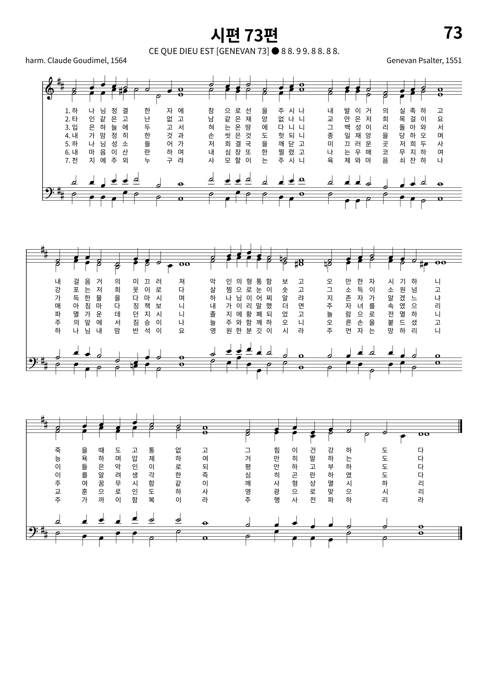

시편 73편
CE QUE DIEU EST [GENEVAN 73] · 8 8. 9 9. 8 8. 8 8.
곡조: Genevan Psalter, 1551 · 화성: Claude Goudimel, 1564 · 가사: 개역한글판 시편 73편 편역(AI 초벌 편역판 · 신학 감수 전) · 7절
악보 PDF MusicXML(출력용) MusicXML(반주용, 전주·반복 포함) 개역한글 시편 73편 읽기
악보

가사
1절 (시편 1-4)
하나님 정결한 자에
참으로 선을 주시나
내 발이 거의 실족하고
내 걸음 거의 미끄러져
악인의 형통함 보고
오만한 자 시기하니
죽을 때도 고통 없고
그 힘이 건강하도다
하나님 정결한 자에
참으로 선을 주시나
내 발이 거의 실족하고
내 걸음 거의 미끄러져
악인의 형통함 보고
오만한 자 시기하니
죽을 때도 고통 없고
그 힘이 건강하도다
2절 (시편 5-8)
타인 같은 고난 없고
남 같은 재앙 없나니
교만은 저희 목걸이요
강포는 저희 옷이로다
살찜으로 눈이 솟고
그 소득이 소원 넘고
능욕하며 압제하여
거만히 말하는도다
타인 같은 고난 없고
남 같은 재앙 없나니
교만은 저희 목걸이요
강포는 저희 옷이로다
살찜으로 눈이 솟고
그 소득이 소원 넘고
능욕하며 압제하여
거만히 말하는도다
3절 (시편 9-12)
입은 하늘에 두고서
혀는 온 땅에 다니니
그 백성 이리 돌아와서
가득한 물을 다 마시며
하나님이 어찌 알랴
지존자가 알겠느냐
이들은 악인이로되
평안하고 부하도다
입은 하늘에 두고서
혀는 온 땅에 다니니
그 백성 이리 돌아와서
가득한 물을 다 마시며
하나님이 어찌 알랴
지존자가 알겠느냐
이들은 악인이로되
평안하고 부하도다
4절 (시편 13-16)
내가 맘 정히 한 것과
손 씻은 것도 헛되니
종일 재앙을 당하오며
매 아침마다 징책 보니
내가 이리 말했더면
주 자녀를 속였으리
이를 알려 생각한즉
심히 곤란하였도다
내가 맘 정히 한 것과
손 씻은 것도 헛되니
종일 재앙을 당하오며
매 아침마다 징책 보니
내가 이리 말했더면
주 자녀를 속였으리
이를 알려 생각한즉
심히 곤란하였도다
5절 (시편 17-20)
하나님 성소 들어가
저희 결국을 깨닫고
미끄러운 곳 저희 두사
파멸 가운데 던지시니
졸지에 황폐되었고
놀람으로 전멸하니
주여 꿈 무시함 같이
깨사 형상 멸시하리
하나님 성소 들어가
저희 결국을 깨닫고
미끄러운 곳 저희 두사
파멸 가운데 던지시니
졸지에 황폐되었고
놀람으로 전멸하니
주여 꿈 무시함 같이
깨사 형상 멸시하리
6절 (시편 21-24)
내 마음이 산란하며
내 심장 또한 찔렸고
나는 우매코 무지하여
주의 앞에서 짐승이나
늘 주와 함께하오니
오른손을 붙드셨고
교훈으로 인도하사
영광으로 맞으시리
내 마음이 산란하며
내 심장 또한 찔렸고
나는 우매코 무지하여
주의 앞에서 짐승이나
늘 주와 함께하오니
오른손을 붙드셨고
교훈으로 인도하사
영광으로 맞으시리
7절 (시편 25-28)
천지에 주 외 누구랴
사모할 이는 주시니
육체와 마음 쇠잔하나
하나님 내 맘 반석이요
영원한 분깃이시라
주 먼 자는 망하리니
주 가까이 함 복이라
주 행사 전파하리라
천지에 주 외 누구랴
사모할 이는 주시니
육체와 마음 쇠잔하나
하나님 내 맘 반석이요
영원한 분깃이시라
주 먼 자는 망하리니
주 가까이 함 복이라
주 행사 전파하리라